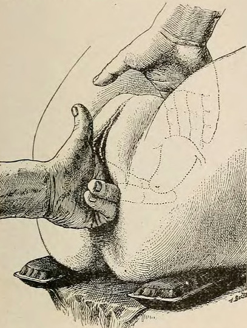

Página 5 · Parte C · Probabilidade uterina
Probabilidade no útero: quatro epônimos do toque
“Piscacek = grávida torta o resto da gestação” · “colo amolecido = certeza”. Dois erros de sala — e a banca os usa com frequência. Os quatro epônimos uterinos são probabilidade, nunca certeza.
Regra de ouro: ninho (útero, vagina, vulva) sobe para probabilidade — mas probabilidade não é certeza. Certeza exige ouvir, sentir ou ver no US (próximas páginas).
Piscacek: assimetria do início
Sinal de Piscacek = assimetria uterina no início da gravidez: o ponto de implantação cresce mais que o lado contralateral. No toque bimanual, com útero ainda pequeno, percebe-se uma área um pouco maior — o lado da implantação “vence”. Macete: Piscacek = o útero “piscou” (assimetria) — só no início. Não significa que a gestante “anda torta” pelo resto da gravidez.
Hegar: istmo amolecido
Sinal de Hegar = amolecimento do istmo (entre corpo e colo). No toque bimanual, a mão interna e a mão externa quase se encontram no istmo — sensação de separação entre colo e corpo. Macete: Hegar = útero “molenguinho” no istmo; macete de sala “eca” para fixar o epônimo.
Goodell: colo labial
Sinal de Goodell = colo com consistência mais labial (amolecido) na gestação. Contraste de prova:
- Ginecologia (não grávida): consistência de ponta de nariz
- Obstetrícia (grávida): consistência labial = Goodell
Na prática, diante de atraso em ciclo antes regular, o colo amolecido aumenta a probabilidade — e ainda assim não é certeza.
Noble-Budin: fundos de saco cheios
Sinal de Noble-Budin = preenchimento dos fundos de saco vaginais pelo útero gestacional mais globoso. Forma do útero:
- Ginecologia: mais piriforme / “de pera” — o dedo avança um pouco no fundo de saco
- Obstetrícia: mais globoso / “gordinho” — o dedo esbarra no corpo que preenche o fundo de saco
Macete: Noble-Budin = “bundinha” preenchendo o fundo de saco.
Regra-mãe uterina e o caso
Regra-mãe uterina: útero aumentado, abaulado, assimétrico, amolecido (istmo/colo) = probabilidade. No caso âncora: útero aumentado e abaulado à esquerda + colo amolecido = probabilidade (compatíveis com Piscacek + Goodell no raciocínio).
[LINK-FORWARD A12–A13] Anatomia de istmo/colo/corpo já está na base; aqui só o sinal. Sem reabrir parede, assoalho, ureter ou artéria uterina.
| Epônimo | O que muda | Onde | Degrau | Macete |
|---|---|---|---|---|
| Piscacek | assimetria do início | útero (ponto de implantação) | probabilidade | “piscou” — assimetria |
| Hegar | istmo amolecido | istmo (corpo ↔ colo) | probabilidade | “eca” / molenguinho |
| Goodell | colo labial | colo uterino | probabilidade | “ponta de nariz” × lábio |
| Noble-Budin | fundos de saco cheios | fundos vaginais | probabilidade | “bundinha” preenchendo |

O gesto do toque bimanual: mão interna avança pelos fórnices, mão externa palpa o fundo uterino. É nesse toque que Piscacek, Hegar, Goodell e Noble-Budin se manifestam — todos no mesmo degrau.
Diagnosis and Treatment of Diseases of Women (1912), Figure 63, p. 90. Public domain (atlas histórico). Source: https://commons.wikimedia.org/wiki/File:Diagnosis_and_Treatment_of_Diseases_of_Women_(1912)_Figure_63_(page_90_crop).jpg
Quiz — fixação
No toque, as mãos quase se encontram no istmo. Epônimo e degrau:
- Gabarito B. Hegar = amolecimento do istmo (corpo–colo); sensação de separação / mãos quase se tocando = probabilidade, nunca certeza.
- (A) Goodell é colo labial, não istmo; e não é certeza.
- (C) Piscacek é assimetria de implantação no início, não o encontro das mãos.
- (D) Noble-Budin = fundos de saco cheios; e o degrau seria probabilidade, não presunção.
- Por que cair na A: amolecimento vira “tudo é Goodell”; a banca separa istmo (Hegar) de colo (Goodell).
Colo de consistência labial na gestante corresponde a:
- Gabarito B. Contraste de prova: gineco = ponta de nariz; obstetrícia = lábio = Goodell.
- (A) Hegar = istmo.
- (C) Puzos = rechaço (certeza, ≥~14 sem).
- (D) Hunter = aréola secundária (presunção).
- Por que cair na A: “amolecimento” genérico funde Hegar e Goodell — a banca separa por sítio.